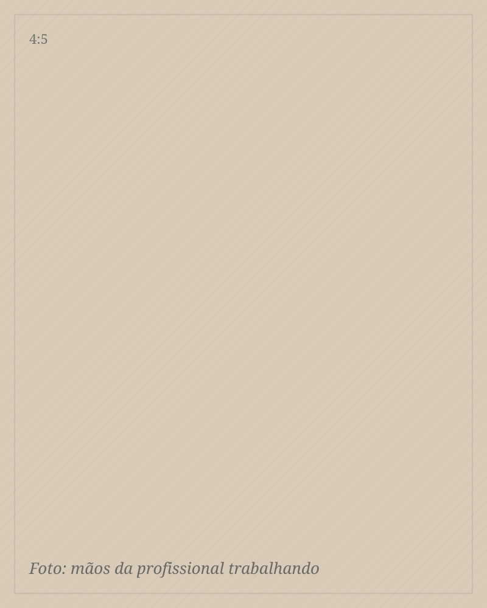
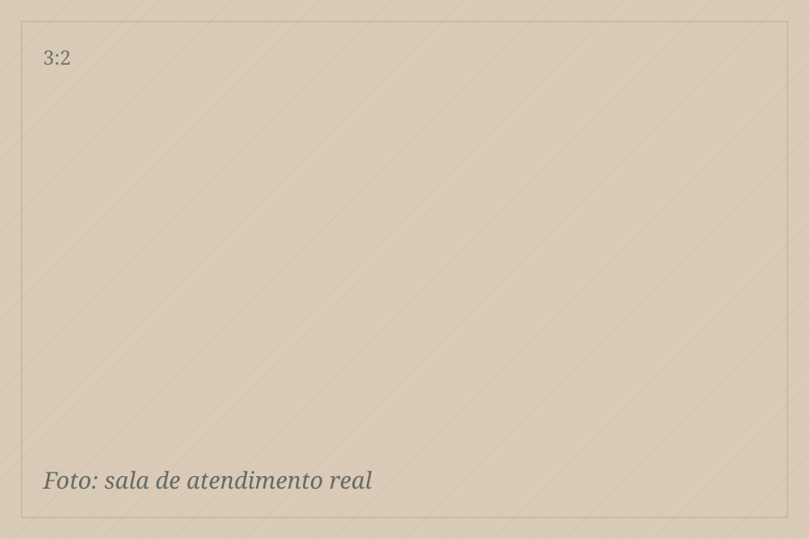
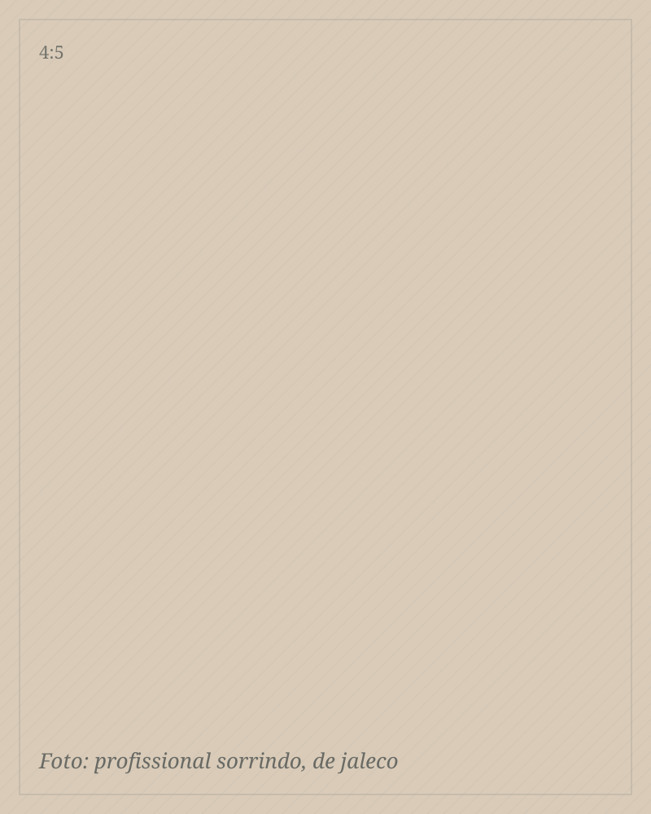
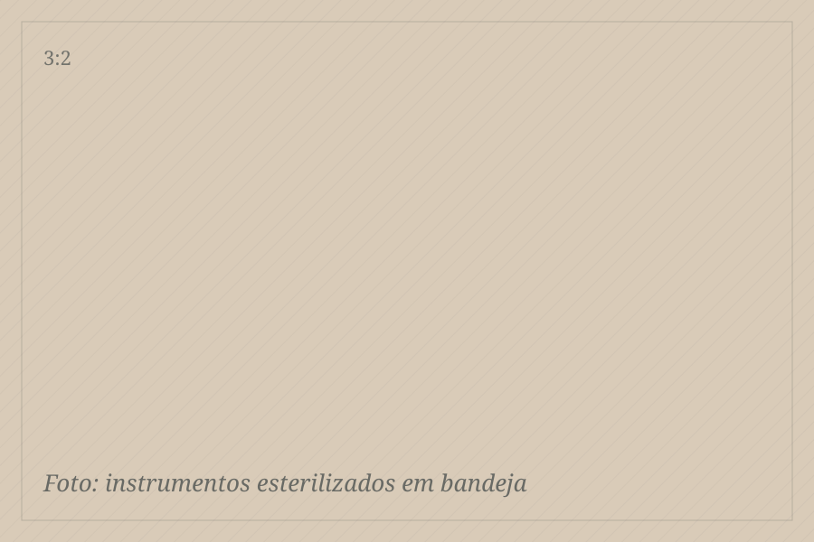

Podologia em [BAIRRO], [CIDADE]
Unha encravada, calo, rachadura. A gente resolve, sem dor e sem pressa.
Atendimento podológico em [BAIRRO] com material esterilizado em autoclave e hora marcada.

[ENDEREÇO] [HORÁRIOS] Atendimento com hora marcada
- Tempo de atendimento
- 12anos atendendo
no bairro - Pacientes atendidos
- 6milpacientes que
já passaram aqui
- Material esterilizado em autoclave. Não é só álcool. É o mesmo processo de centro cirúrgico.
- Descartáveis individuais. Lâmina, lixa e luva são abertas na sua frente e vão pro lixo depois.
01Tratamentos
O que eu atendo no consultório
Cada problema tem uma causa. Antes de mexer no pé, eu procuro entender de onde veio, pra não voltar daqui a um mês.
-
01
Unha encravada onicocriptose
O problemaA borda da unha entra na pele, inflama e dói até encostar no lençol.
O que eu façoTiro só o pedaço que está machucando, sem arrancar a unha, e faço o curativo. Na maioria das vezes você sai de sapato.
-
02
Calos e calosidades
O problemaA pele engrossa onde o sapato aperta ou onde você pisa mais forte, e começa a dar pontada ao andar.
O que eu façoDesbaste com lâmina estéril, sem sangrar. E a gente descobre a causa: calçado, pisada ou formato do pé.
-
03
Rachaduras no calcanhar
O problemaO calcanhar resseca, abre em fissuras e às vezes chega a sangrar.
O que eu façoLixo a pele grossa, hidrato e te passo uma rotina simples pra fazer em casa, pra não abrir de novo.
-
04
Micose de unha onicomicose
O problemaUnha amarelada, grossa ou esfarelando, que não melhora com esmalte de farmácia.
O que eu façoDesbasto a parte afetada e acompanho com aplicações. Leva meses, e eu te falo isso já na primeira consulta.
-
05
Pé diabético avaliação e cuidados
O problemaCom diabetes, a sensibilidade do pé muda sem a gente perceber, e um corte pequeno demora a fechar.
O que eu façoTeste de sensibilidade, corte de unha e remoção de calos com cuidado redobrado. Você leva um resumo por escrito pro seu médico.
-
06
Órtese para correção de unha
O problemaA unha encrava de novo e de novo, porque cresce curvada demais.
O que eu façoColoco uma pequena fibra sobre a unha que vai corrigindo a curva aos poucos. Não dói e dá pra usar qualquer sapato.
-
07
Laserterapia
O problemaInflamação, micose ou ferida que está demorando pra responder.
O que eu façoLaser de baixa potência, em sessões curtas e sem dor, que ajuda a cicatrizar e a combater o fungo.
-
08
Podoprofilaxia limpeza e manutenção
O problemaNem todo mundo chega com dor. Tem quem só quer o pé bem cuidado, ou já não alcança o próprio pé.
O que eu façoCorte certo das unhas, limpeza dos cantos, remoção de calosidade leve e hidratação. Uns 50 minutos.
Não achou o seu caso? Me manda uma foto pelo WhatsApp e eu te digo se é comigo.
02Primeira consulta
Como é a primeira vez aqui
Reserve perto de uma hora. Se puder, venha com o sapato que você usa no dia a dia. Ele conta muito sobre o seu pé.

-
1
Avaliação
Olho os dois pés, mesmo que a queixa seja num dedo só. Unhas, pele, pisada, circulação e sensibilidade.
-
2
Conversa
Te explico o que encontrei, com nome e sem susto. O que dá pra resolver hoje e o que vai levar mais tempo. Quem decide é você.
-
3
Procedimento
Abro o envelope esterilizado na sua frente e começo. Se incomodar, você fala e eu paro.
-
4
Orientação para casa
Você sai sabendo como cortar a unha, que meia usar e o que passar. Se precisar de retorno, a gente já marca ali.
03Quem atende

Oi, eu sou a [NOME].
Sou podóloga formada pelo [INSTITUIÇÃO] e atendo aqui em [BAIRRO] desde [ANO]. Antes do consultório, passei anos atendendo em clínica de pé diabético, e foi lá que aprendi a não subestimar nenhum calo.
Comecei na podologia por causa da minha avó. Ela era diabética e tinha medo de cortar a própria unha. Eu via o quanto aquilo tirava a tranquilidade dela. Hoje muita gente chega aqui com esse mesmo medo, e eu gosto de ver a pessoa ir embora andando mais leve.
“Pé não é luxo. É o que te leva pro trabalho, pra feira, pro neto.”
- Formação
- Técnico em Podologia, [INSTITUIÇÃO], [ANO]
- Especialização
- Pé diabético e órteses ungueais
- Registro
- [Nº]
04Biossegurança
O que acontece com cada alicate depois que você vai embora
É a pergunta mais importante que você pode fazer a um podólogo. Aqui a resposta não é “passei álcool”.
Autoclave
Todo instrumento de metal passa por limpeza, vai para um envelope de grau cirúrgico e é esterilizado em autoclave a 134 °C. Cada ciclo tem indicador que muda de cor e fica registrado.
Descartáveis
Lâmina de bisturi, lixa, luva, máscara, toalha e o papel da cadeira são de uso único. Usou, foi para o descarte. Lâmina vai para a caixa de perfurocortante.
Higienização
Entre um paciente e outro, bancada, cadeira e equipamentos são limpos com desinfetante hospitalar. Por isso tem intervalo entre os horários. Não é atraso, é protocolo.

O caminho de um instrumento
- 1Uso em um único paciente
- 2Lavagem e limpeza ultrassônica
- 3Secagem e embalagem lacrada
- 4Autoclave a 134 °C
- 5Aberto na frente do próximo paciente
Quer ver o registro dos ciclos da autoclave? É só pedir. Eu mostro.
05Pacientes
O que me contam depois
Eu tava há quase um mês com a unha do dedão inflamada, tentei cortar sozinha e só piorou. Saí de lá andando normal, sério. E ela me explicou tudo, coisa que ninguém tinha feito antes.
Levo minha mãe, que é diabética, a cada 40 dias mais ou menos. O que eu mais gosto é que ela abre o pacotinho dos instrumentos na frente da gente. Parece bobagem mas pra mim faz diferença
Achei que calo era coisa que a gente tem e pronto. Ela viu que era o tênis que eu usava pra correr, troquei e não voltou mais. Só falta ter horário sábado à tarde rs
Dói?
Na grande maioria dos casos, não. Unha encravada muito inflamada pode incomodar no começo, mas eu vou no seu ritmo e paro quando você pedir. Ninguém deveria sair da podóloga mancando.
Quanto tempo dura a consulta?
A primeira leva perto de uma hora, porque tem a avaliação completa. Retornos e manutenção ficam entre 40 e 50 minutos.
Atende diabéticos?
Sim, e com frequência. O atendimento é mais cuidadoso, com teste de sensibilidade e atenção a qualquer ferida. Se tiver, traga seu último exame de glicemia.
Precisa de pedido médico?
Não. Pode marcar direto. Se eu encontrar algo que não é da podologia, como uma infecção que precisa de antibiótico, eu te encaminho para o médico.
Atende a domicílio?
Sim, para pessoas acamadas ou com dificuldade de locomoção, em [BAIRRO] e bairros próximos. Levo o material esterilizado lacrado, igual ao do consultório. Tem uma taxa de deslocamento.
Quais as formas de pagamento?
Pix, dinheiro, débito e crédito. Não atendo por convênio, mas emito recibo se você quiser pedir reembolso.
07Onde fica
Em [BAIRRO], perto de [PONTO DE REFERÊNCIA]
Horários
- Segunda a sexta
- [HORÁRIOS]
- Sábado
- [HORÁRIOS]
- Domingo
- Fechado
Só com hora marcada, pra você não esperar.
Como chegar
A [X] minutos a pé de [PONTO DE REFERÊNCIA]. Ônibus [LINHAS] param na [RUA].
Se está doendo, não espera passar.
Me manda uma mensagem contando o que está sentindo. Respondo no mesmo dia, dentro do horário de atendimento.
Agendar pelo WhatsAppou ligue [NUMERO]